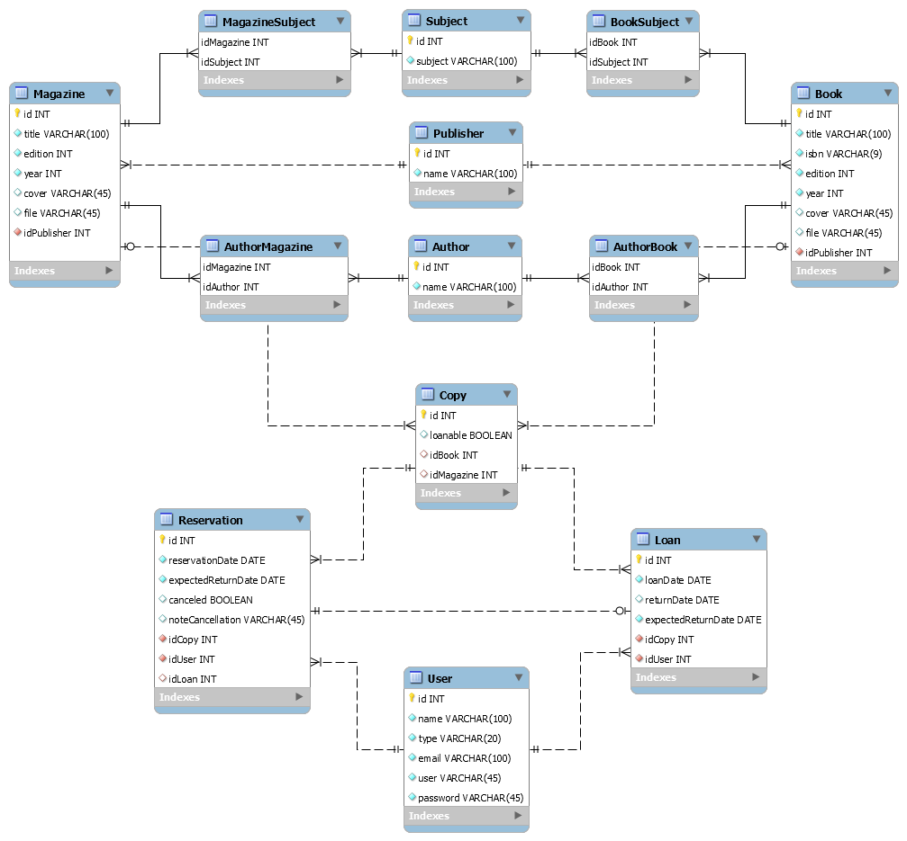

Diagrama de Banco de Dados (Diagrama de Entidade Relacionamento
O Diagrama Entidade Relacionamento, como o nome sugere, é um modelo conceitual utilizado na Engenharia de Software para descrever os objetos (entidades) envolvidos em um domínio de negócios, com suas características (atributos) e como elas se relacionam entre si (relacionamentos).
Antes de iniciar o desenvolvimento da aplicação optamos por elaborar primeiramente o diagrama de entidade relacionamento, optamos por utilizar o ORM Hibernate que possiblita a criação do banco de dados a partir das classe, mas preferimos elaborar a estrutura de nosso banco de dados para termos maior controle dos dados.
Nosso Diagrama de Entidade Relacionamento:

Obs.: O diagrama foi elaborado com o programa MySQL Workbench e pode ser encontrado no diretório "/src/main/resources/documentation".